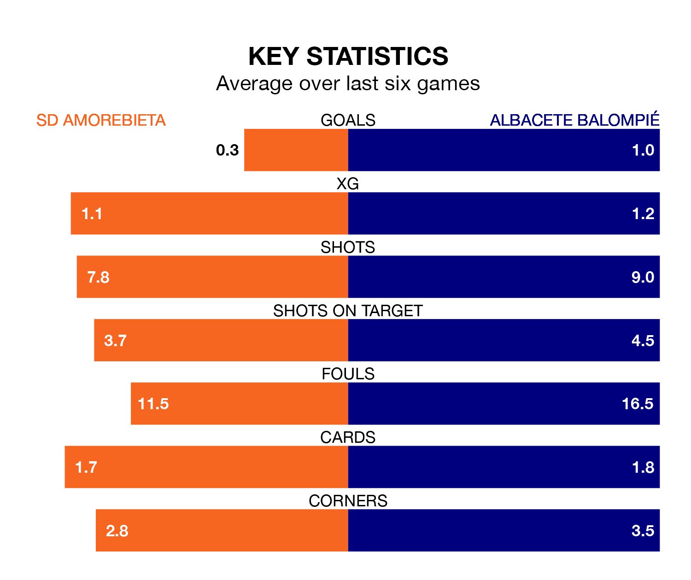

SD Amorebieta host Albacete Balompié on Sunday at Instalaciones de Lezama Campo 2 in the Segunda División.
In their last league match, on February 18, Amorebieta drew with SD Huesca 0-0 away.
Albacete won, 2-0 at home against Racing Santander, with Jonathan Cristian Silva and Manuel Fuster Lázaro on the scoresheet.
Amorebieta are bottom of the table after 27 games, of which they have won four and drawn eight, earning 20 points.
Albacete are five places ahead of the hosts in 17th, with seven wins and nine draws putting them on 30 points.
Amorebieta are in disappointing form in the Segunda División, with one win and two draws from their last six games.
And also with a win and two draws over that period, the away team's form is identical – they have both taken five points from 18.
With 20 goals in 27 games so far this season, Amorebieta are the league's joint-second-lowest scorers with 0.7 goals per game. And they are conceding more than average, letting in 36 goals at a rate of 1.3 per game.
Albacete, meanwhile, are average scorers, with 1.1 goals per game. They have conceded 1.4 goals per game.
The home side's Josué Dorrio Ortega is among the league's most creative players, racking up six assists in 27 appearances so far this season, and holding second spot in the Segunda División's assist charts.
For Albacete, Fuster Lázaro has set up the most goals, having laid on five assists in 27 games.
Sunday's match will be refereed by Oliver De La Fuente Ramos, who has taken charge of 13 Segunda División games so far this season, issuing four red cards and booking 57 players. He has awarded five penalties.
The last Amorebieta game De La Fuente Ramos refereed was a 1-1 away draw with Real Oviedo on January 13. His last Albacete match was their 1-1 draw away at FC Cartagena on November 19.
Updated: 10:08 (UTC), 23/02/24